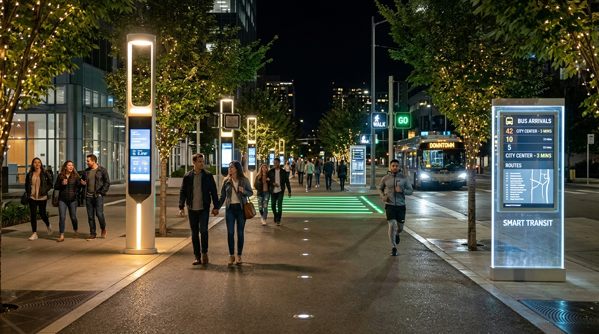

Interactive City Map Dashboard
Toggle multi-dimensional layers to discover attractions, cultural landmarks, and active hazard blackspots.
Interactive Layers Live filters
Key Points of Interest
7 locationsAI "Chaos-to-Calm" Dynamic Itinerary Builder
Transform urban uncertainty into a curated, safe flow. Input your budget and time to generate a real-time day itinerary with automatic weather/traffic rerouting.
Trip Preferences AI Synthesizer
Best vs. Worst Places Comparison
Compare city sectors head-to-head across safety indices, cleanliness, affordability, and liveability ratings.
Full City Locality Scorecard Matrix
Ranked across safety, cleanliness, affordability, and transit connectivity
| Locality / Sector | Classification | Safety Score | Cleanliness | Affordability | Air Quality (AQI) | User Rating | Action |
|---|
Smart City Feed & Community Alerts
Real-time crowdsourced reports, traffic alerts, and weather bulletins from verified citizens and sensors.
Report Civic Hazard
Help fellow explorers stay safe
Experiencing the City: Curated Trails
Rich photo-guided journeys curated by local urban historians and food critics.
Midnight Lanterns & Street Food Safari
Navigate bustling night markets from sizzling wok noodles to charcoal-grilled skewers. Includes verified crowd-safety checkpoints and hygienic vendor badges.
Royal Fortresses & Historic Grandeur
Explore 17th-century royal gateways illuminated at twilight. Experience authentic Sufi qawwali performances under arched courtyards with tourist police escort.

Safe Corridors 100% LED LitSmart Transit & Illuminated Corridors
Walk confidently after dark. Features solar-powered intelligent street poles, real-time digital bus timetable displays, and panic SOS pillars every 150 meters.
Explorer Badges & Hidden Secrets Radar
Earn digital achievements by walking safe corridors, visiting heritage marvels, and uncover underrated budget secrets nearby.